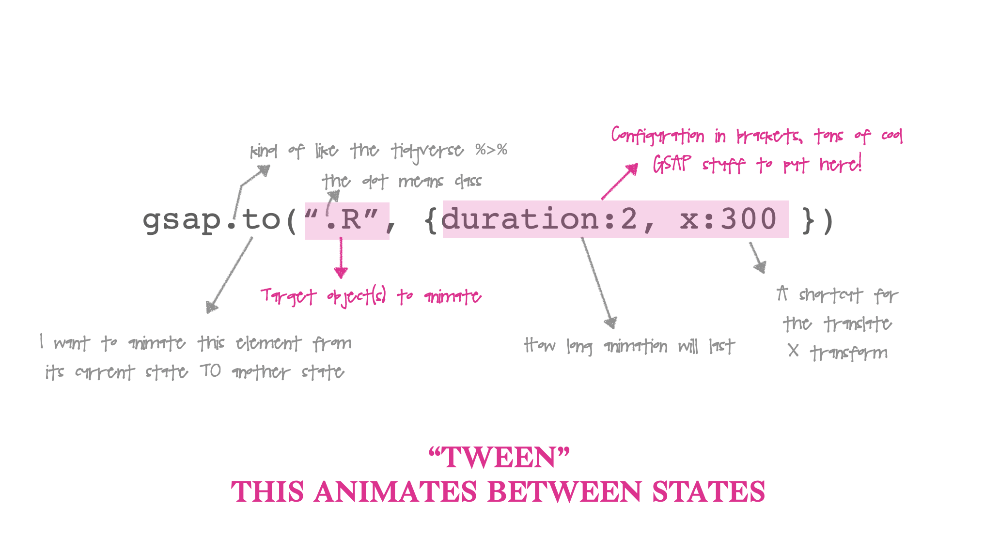

GSAP Code
Before we get to our goal of spinning these images in a circle, I want to break down what a GSAP “TWEEN”. Let’s simply start by using the to method to move our R logo from it’s start position 300 pixels to the right:


But Maya, I copied your code above and my animation occurs once - yours occurs on loop, it goes back and forth, and it even BOUNCES!
I got fancy and added more to my configuration. I set repeat: -1 which means loop through my animation infinitely, and yoyo: true which means play my animation, then play it in reverse – try it!
There’s also an ease property if we want. We can use ease: "bounce" in our configuration to make the image look like its bouncing. GSAP includes a GUI explorer to look at different eases, and even create your own!